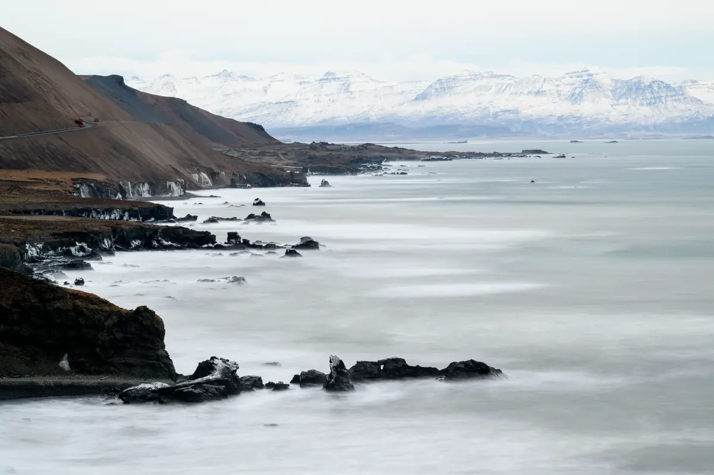

Masa madre
Una hogaza de corteza gruesa y miga abierta, con sal de la costa.
Horno Lunar
Pan para el desayuno, para compartir o para el domingo.
Hacemos la masa el día anterior y la dejamos fermentar despacio en la nevera.

El horno se enciende a medianoche y el primer pan sale a las cinco. Puedes llegar a ver la masa en la mesa antes de que se hornee.
Cómo llegarCada hogaza empieza el martes y sale del horno el jueves con la corteza que pide la receta.
Una hogaza de corteza gruesa y miga abierta, con sal de la costa.

Dos días de fermento para el pan oscuro de los sábados.
Laminado a mano en la madrugada, con mantequilla de Santander.
Del mismo tostador de barrio desde 2019.

Ocho puestos junto a la ventana, sin reserva.